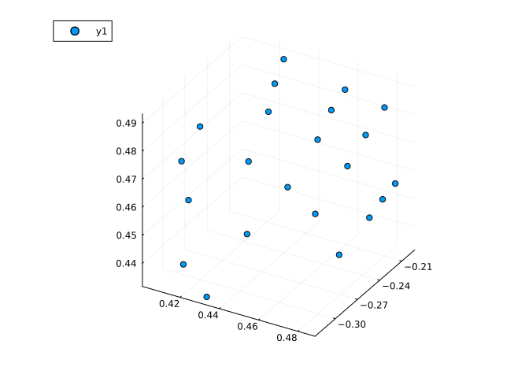
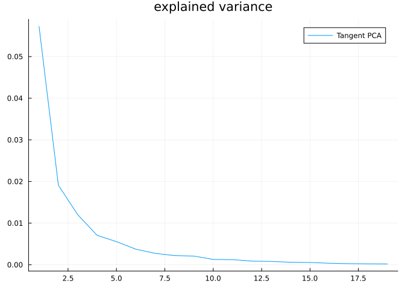
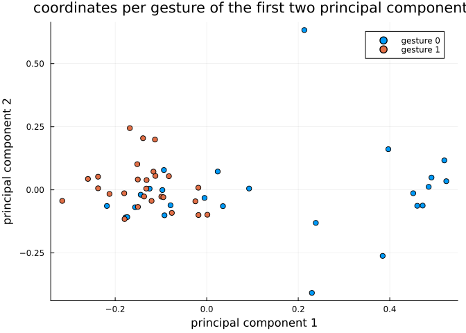
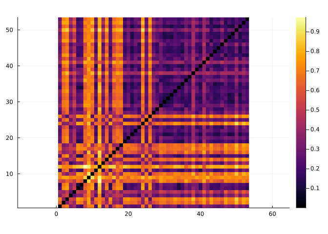

Hand gesture analysis
In this tutorial we will learn how to use Kendall’s shape space to analyze hand gesture data.
Let’s start by loading libraries required for our work.
using Manifolds, CSV, DataFrames, Plots, MultivariateStatsOur first function loads dataset of hand gestures, described here.
function load_hands()
hands_url = "https://raw.githubusercontent.com/geomstats/geomstats/master/geomstats/datasets/data/hands/hands.txt"
hand_labels_url = "https://raw.githubusercontent.com/geomstats/geomstats/master/geomstats/datasets/data/hands/labels.txt"
hands = Matrix(CSV.read(download(hands_url), DataFrame, header=false))
hands = reshape(hands, size(hands, 1), 3, 22)
hand_labels = CSV.read(download(hand_labels_url), DataFrame, header=false).Column1
return hands, hand_labels
endload_hands (generic function with 1 method)The following code plots a sample gesture as a 3D scatter plot of points.
hands, hand_labels = load_hands()
scatter3d(hands[1, 1, :], hands[1, 2, :], hands[1, 3, :])
Each gesture is represented by 22 landmarks in $ℝ³$, so we use the appropriate Kendall’s shape space
Mshape = KendallsShapeSpace(3, 22)KendallsShapeSpace(3, 22)Hands read from the dataset are projected to the shape space to remove translation and scaling variability. Rotational variability is then handled using the quotient structure of KendallsShapeSpace
hands_projected = [project(Mshape, hands[i, :, :]) for i in axes(hands, 1)]In the next part let’s do tangent space PCA. This starts with computing a mean point and computing logithmic maps at mean to each point in the dataset.
mean_hand = mean(Mshape, hands_projected)
hand_logs = [log(Mshape, mean_hand, p) for p in hands_projected]For a tangent PCA, we need coordinates in a basis. Some libraries skip this step because the representation of tangent vectors forms a linear subspace of an Euclidean space so PCA automatically detects which directions have no variance but this is a more generic way to solve this issue.
B = get_basis(Mshape, mean_hand, ProjectedOrthonormalBasis(:svd))
hand_log_coordinates = [get_coordinates(Mshape, mean_hand, X, B) for X in hand_logs]This code prepares data for MultivariateStats – mean=0 is set because we’ve centered the data geometrically to mean_hand in the code above.
red_coords = reduce(hcat, hand_log_coordinates)
fp = fit(PCA, red_coords; mean=0)PCA(indim = 59, outdim = 19, principalratio = 0.9912988285103254)
Pattern matrix (unstandardized loadings):
────────────────────────────────────────────────────────────────────────────────────────────────────────────────────────────────────────────────────────────────────────────────────────────────────────────────────────────────────────────────────────────────────────────
PC1 PC2 PC3 PC4 PC5 PC6 PC7 PC8 PC9 PC10 PC11 PC12 PC13 PC14 PC15 PC16 PC17 PC18 PC19
────────────────────────────────────────────────────────────────────────────────────────────────────────────────────────────────────────────────────────────────────────────────────────────────────────────────────────────────────────────────────────────────────────────
1 0.0173855 0.000636845 -0.0161893 -0.0245499 -0.00981021 0.0108967 0.00480455 -0.00160225 0.00965055 0.00308236 -0.00718659 -0.000243068 -0.00278085 0.000614788 -9.15296e-5 -0.000505545 0.00195782 0.00250739 0.000594843
2 0.00414129 0.000334051 -0.00621444 0.00790698 0.0175519 -0.0097201 -0.00241452 0.00218353 0.00804002 -0.0049976 -0.00514098 0.00217929 -0.000189061 0.00306193 0.0045976 -0.00290717 0.0027132 0.000826467 0.000683271
3 -0.00278452 0.0327623 -0.00106001 -0.00522848 -0.00599399 0.00897585 0.0109365 0.00154308 -0.00510698 -0.0118133 -0.000394887 -0.00861796 -0.000921745 -0.00186573 0.00624982 -0.00378874 0.00282378 -0.00101771 -0.00286378
4 0.00227632 -0.0205855 -0.00370886 -0.00918484 -0.00281422 -0.00511051 -0.015321 0.00120702 -0.006792 -0.00168908 8.68548e-6 0.00402992 -0.00324521 0.00280144 0.00255311 -0.00160794 0.000180003 -0.000551923 0.00130734
5 -0.0049244 0.0121741 -0.0119137 0.0118437 0.00064937 0.0129349 -0.00160643 0.00385634 -0.00686451 0.00113489 -0.000602382 0.000139858 0.00439824 0.000576411 0.00406128 0.000175348 -0.00222317 -0.00454532 0.00239012
6 0.0022564 0.00405703 -0.0147493 0.00479343 0.00099672 -0.0037997 0.00427197 -0.00492114 -0.00751233 0.00635193 -0.0046186 -0.00386301 -0.000190645 -0.000564171 -0.000725947 0.00416211 0.000130641 0.00255604 -0.00126336
7 -0.00849223 0.0185022 0.010854 0.0155381 0.00220708 0.000408101 -0.00732174 -0.00679773 0.0012842 0.00746195 -0.00570278 -0.00230826 0.00379148 0.00122698 0.00123253 -0.00166504 0.00307727 0.000367742 0.00210109
8 0.0364754 0.00356004 0.00864952 -0.00313843 0.0128588 0.000392635 0.000367246 0.00971228 -0.00555784 0.00454216 0.000805735 0.000455146 -0.00178109 -0.0059085 -0.000704806 0.00202109 -0.00231604 -0.00145624 -0.00135686
9 -0.00642437 0.0193549 -0.011419 0.000886165 0.0166549 0.00515056 -0.000280578 0.00361531 0.00435576 0.00122792 -0.00134617 -0.000851905 -0.0104828 -0.00184189 0.000607793 0.00344577 0.0057421 0.000522023 0.000591562
10 0.0375757 -0.00015996 0.0407193 0.018211 -0.0211973 0.0109156 0.00528872 -0.00438362 -0.00573709 -0.00167852 0.000278635 -0.0022946 0.00153229 -0.000445404 0.00259449 0.00224609 -0.000574173 0.00274393 0.000188819
11 0.0277787 0.00780307 -0.0166318 -0.00376651 -0.0083135 -0.00195865 -0.000493546 -0.00024609 -0.00567971 -0.00532441 -0.00212507 0.00602551 0.00386 0.00193343 4.23417e-5 -0.00476551 0.000403882 0.00184378 0.000899672
12 0.10427 0.0111309 -0.015799 -0.000302332 0.00516824 -0.00532884 -0.0014996 -7.30056e-5 -0.00240161 0.00172376 0.00687669 -0.00625024 -0.00639534 0.00295592 0.00113749 -0.000466109 -0.000286855 0.00130816 -0.00023168
13 0.0349156 -0.0259781 9.64139e-5 0.00413941 0.00930036 0.0120427 -0.00544059 -0.0130528 0.0092189 0.00781286 0.00541738 0.00122035 0.00472085 -0.00313777 0.00420017 -0.00330501 0.00263946 0.00114665 -0.00191432
14 0.0406743 -0.0145554 0.00847745 -0.008102 -0.0146731 0.0122504 0.00151511 0.0119469 0.00645629 -0.00484009 0.00357907 0.0022329 0.00315935 -0.00342815 0.00112121 0.000716972 -0.000267723 0.00102893 0.00226669
15 -0.00930256 -0.0167858 0.00611584 0.024959 -0.00635687 0.00927873 0.00612683 0.0137937 0.00355393 0.00435918 -0.00352841 0.00155106 -0.000587037 0.0032852 -0.00115968 -0.00459812 0.000365738 0.00152501 -0.00220028
16 -0.00443594 -0.00281474 0.00505291 -0.00342471 0.0178561 -0.00334566 0.00749361 -0.00705821 0.00378162 -0.00416412 -0.00867159 0.0033906 0.00257508 0.00611411 0.00313804 -0.00166894 -0.000486449 -0.000684733 -0.000431136
17 0.0116867 0.0190841 0.00768291 0.00226264 -0.0023963 -0.0120551 -0.0108479 0.00923083 0.00173054 0.00319921 0.000263058 0.00831246 0.00149357 -0.00341414 0.00165869 -0.000452325 0.00122167 0.000489292 -0.000724031
18 0.0267767 -0.0159784 0.0133608 -0.0147061 0.0162533 0.00217607 -0.00086192 0.00502474 -0.00327539 0.00389318 0.00760878 0.000559328 0.00246694 0.00188893 0.00119427 -0.00116627 -0.000328369 0.00330999 0.000683408
19 0.0178674 0.00678508 0.00622795 0.00252456 0.0101081 -0.00520374 -0.00394873 -0.00857975 0.00459688 0.00264695 0.00338812 -0.00368184 -0.00100438 -0.0019011 0.000770851 0.00044916 -0.00450338 0.000428239 -0.00173068
20 0.0142149 -0.0102457 -0.00720102 -0.00827252 -0.000194544 -0.00904612 0.00656784 -0.00288506 -0.00337141 -0.000904713 0.00562513 0.00267589 0.00346339 -0.00100621 -0.00310453 0.00179422 0.000962525 -0.000278243 0.00176121
21 -0.0236419 -0.0249401 -0.00224796 -0.00102043 -0.00730152 0.00452086 0.00427695 0.00706512 -0.00260505 0.00724108 0.00013085 -0.000635022 -0.0044843 0.0065385 0.0038201 0.0021496 -0.00239896 -0.00176404 -0.000719906
22 -0.0321825 -0.00425879 0.0225478 0.0109337 0.0145482 0.0158751 -0.00235927 0.00364776 0.000820952 0.00241549 0.0041401 -0.000768498 -0.00151804 -0.00103051 -0.000977858 0.00102485 0.00302874 -0.00154859 0.000908919
23 -0.0547437 0.00957327 -0.0296533 -0.00785133 0.0046406 0.0125083 -0.003309 -0.00971159 -0.00520429 0.000105352 0.0123953 0.00298409 -0.00098002 -0.00107685 0.00212605 -0.00222586 -2.45066e-5 0.00179058 -0.00341318
24 -0.0459331 0.0277414 0.0177563 -0.00757283 -0.00154994 0.00419174 0.000228397 0.0047202 -0.00719053 0.00425062 0.00842774 0.00407616 0.00221613 -0.00192485 0.000413624 -0.00184245 -0.000469158 0.00126403 0.000520384
25 0.0137253 0.0330938 -0.00259305 -0.0173027 5.76481e-5 0.0133787 -0.00258063 0.00199686 0.00372244 0.00811022 0.000803248 -0.00177067 0.00209383 -0.000529693 0.00128358 -0.0037069 -0.00514658 -0.00184888 -0.000194885
26 -0.0603615 -0.0119161 0.00882267 0.00514721 0.00529219 -0.0122092 0.00736956 -0.00682808 0.000558328 0.00834601 0.0116706 -0.00351252 -0.00185182 -0.000584981 0.000266096 -0.0040918 0.000738611 -0.000967152 0.00238475
27 0.0336629 0.0104236 0.0261054 -0.0152452 -0.00252001 -0.00504679 -0.0123813 -0.00272042 0.00297605 -0.00692167 0.00454449 0.00353461 -0.00250126 0.00216841 -0.00364534 0.000924378 -0.00102377 0.000628113 0.000155479
28 0.0422619 -0.00242415 0.00194491 -0.00269802 -0.00745415 -0.0151133 0.00447106 0.00282524 -0.00353172 0.00314076 0.00584346 -0.0046243 -0.00235677 0.00768856 0.000553617 0.00217504 0.000911649 -0.00247882 -0.000685967
29 0.00883288 -0.00162966 0.018317 -0.00091465 -0.0117905 -0.0143036 -0.00415359 -0.0102138 -0.00610175 0.00279988 -0.00565156 0.0046463 0.00197636 -0.00129791 0.00400266 -0.00288579 -0.0019277 0.000179645 -0.00116481
30 -0.0167029 0.00911663 -0.00133306 0.00854662 -0.0196894 -0.00125151 0.00519147 -0.00662994 0.0116743 -0.00286996 0.00369844 -0.00142735 0.00241535 0.00170889 -0.00332472 -0.000731511 6.42406e-5 -0.00392972 -0.00221066
31 0.0185643 -0.00511788 0.00897978 -0.0059246 0.0069449 0.00488395 -0.0036883 0.000884436 -0.00130671 0.00485091 -0.00602461 -0.00157791 0.000661809 0.00128482 -0.0022535 0.000643781 -0.00137816 0.00138855 0.00177414
32 0.0318392 -0.0241056 -0.00183089 0.00331854 -0.00112742 0.00427225 0.00690474 -0.0114143 0.0135192 0.00089417 0.00105723 -0.00176937 0.00226368 -0.00349391 -0.000954307 0.00145221 -0.00236592 0.000190196 0.00329855
33 -0.0323147 0.053425 0.0372678 -0.0105732 0.0132107 -0.00339071 -0.000764724 -0.00172247 0.010934 -0.00426652 0.00350433 -0.00285683 0.00615795 0.00285417 -0.0014361 0.00537323 0.00181549 0.0011817 0.000144893
34 0.0102755 -0.0254688 0.000576695 -0.0157286 -0.00370359 0.00639325 -0.0100209 -0.00130888 -0.00169533 -0.00640355 -0.00161379 -0.00620737 0.00465267 -0.00542501 0.00221331 0.00467989 -0.000154791 -0.00357667 -0.00174044
35 -0.0187921 -0.0278792 0.00762221 0.0203661 -0.00522219 -0.00496367 0.0026507 0.00309316 -0.00263494 -0.0023065 0.00230521 -0.0021306 0.00317717 -0.0011341 0.00171337 0.00253469 0.00173667 0.00472356 -0.00325254
36 -0.0281434 0.00692303 0.0135576 0.0150621 -3.45035e-5 0.00692872 -0.00213414 0.00749015 0.00013037 -0.00161564 0.0014149 0.00355391 -0.00353628 0.00186856 -0.0040984 -0.000762863 -0.00374575 -0.00286227 0.00239549
37 0.0444518 0.0140451 -0.0177105 0.00747961 0.000690187 0.0143313 -0.00211967 -0.00148993 0.00697546 -0.00192432 0.00286409 0.00458382 -0.000210551 0.00431424 0.000836407 0.00198358 0.000554871 -0.00185297 -0.000933994
38 0.0427542 0.0198576 -0.00795449 0.0115803 -0.00629815 0.000958173 -0.000670645 0.00184352 -0.0014269 -0.00182662 0.00286294 -0.00191824 0.00346162 -0.00172646 -0.0048974 -0.00372581 0.00120087 0.0019076 0.00402424
39 0.0229225 -0.00426749 0.0223177 -0.00606517 -0.000464169 -0.00294724 0.0133813 -0.0024651 0.00602226 0.00279229 0.000209127 0.00209029 -0.00436785 -0.00112376 0.00524927 -0.00139411 0.00203064 -0.00387777 0.00210721
40 0.00340627 -0.002551 0.00468302 0.016922 -0.00087532 0.00381858 -0.00115579 -0.00982067 -0.000953865 -0.0107195 -0.00149229 0.00567459 -0.00950229 -0.00649935 -0.00401252 -0.00142877 6.51574e-5 -0.001418 -0.0007485
41 -0.00252943 -0.0154656 -0.0185877 -0.00503709 0.0196475 0.000757621 0.0083016 -0.00139321 -0.0122729 -0.00334757 0.000134299 0.0025698 0.00693995 0.000106431 -0.00570021 0.001442 0.00234008 -0.00351234 0.00105664
42 -0.0197534 -0.0420968 0.00903828 -0.0126781 -0.00700759 0.00315487 0.00215178 -0.00277645 -0.00241088 0.00403162 -0.00370267 -0.00432386 0.00329252 0.00108784 -0.00355877 0.000312319 0.00117976 -0.00111906 -0.00100037
43 -0.0165414 0.00141539 -0.0137025 0.00235394 0.0100988 -0.00772571 0.0161823 0.0080184 0.0109971 -0.0068699 0.00472434 -0.000858139 0.00166438 0.000621182 0.00347287 -0.00042774 -0.00578248 0.00116141 -0.000969362
44 0.00327356 0.00732386 -0.0172391 0.00208018 -0.00439327 -0.0129229 -0.00222108 0.0138643 0.00446419 0.000994211 0.0015694 0.00304331 0.00744581 -0.00213839 0.00202703 0.00250179 0.00141239 -0.000133561 -0.00230411
45 -0.000888326 0.0259359 -0.0130999 0.00421491 0.00342141 0.0144244 0.00336686 -0.00102413 -0.00817201 0.00386964 -0.00406899 0.00163275 0.00427038 -0.000788569 0.00357643 0.00316951 0.000309124 0.00150524 0.00161125
46 -0.0042722 0.00307551 0.00358086 0.00270541 -0.0161164 -0.00118439 -0.00450004 0.00302117 0.00390437 0.00333273 0.003588 0.00229504 6.91777e-5 0.000371144 0.000325992 0.00111262 0.00341049 -0.00107284 -0.000469154
47 -0.0272713 0.0117052 0.0030402 0.00528473 -0.000105286 -0.00283541 -0.00784446 0.00565022 0.00170229 0.00394462 -0.00513521 -0.00819901 0.000136608 0.00181311 -0.00200453 -0.00178317 0.00129039 -0.00147405 -0.000814289
48 -0.0134193 -0.0186634 0.000326505 -0.00455047 -0.00159784 0.00490561 -0.00164247 -0.00449218 0.00307453 0.000120946 0.00248512 0.00924946 0.00107424 0.00620751 0.00352128 0.0032275 0.00195177 -0.00125506 0.00112995
49 -0.00241856 -0.0212005 0.0255376 -0.0142958 0.0108332 0.00804346 0.00190185 0.00388918 -0.00871033 -0.00484363 0.000815342 -0.000501167 -0.00667201 0.000774967 -6.7004e-5 -0.00134048 2.77396e-5 0.00200935 -0.00124611
50 0.0186602 -0.0137507 -0.00215632 0.0148877 0.0130769 0.00787733 -0.00673317 0.00375946 0.0104502 0.00157273 -0.0016547 0.00151579 0.000143324 0.00199503 -0.00527869 0.00035693 -0.00175686 0.000878632 -0.00360001
51 -0.0466559 -0.0141001 -0.00849404 0.00284194 0.00635534 -0.002886 -0.00521712 0.00171564 0.00357409 -0.0056073 -0.00483095 -0.00512542 -0.00101796 -0.00138773 0.00397766 0.000947478 -0.00312091 0.00327453 0.00558783
52 0.016956 0.0109322 -0.00785692 0.0191416 -0.00204687 0.00622328 -0.00116895 -0.0092148 -0.00570974 -0.00132407 0.00384308 0.00255672 -0.0011175 0.00740385 -0.000415327 0.00502273 -0.00236483 0.00208774 0.000171655
53 0.0290288 -0.0180278 0.00561411 0.000300885 -0.00347658 0.00636645 0.000726997 0.00533765 -0.000322152 -0.00590684 0.00667851 -0.00364209 0.00171821 0.00474059 0.00310052 -0.00152966 0.00284979 0.000256984 0.00251753
54 -0.0177287 -0.000415008 -0.0179228 -0.00752319 -0.0143941 -0.00299678 0.0134179 0.00368634 0.00596021 0.00644779 0.00176823 0.00466333 -0.00528731 -0.00497389 -0.00206298 0.00309406 0.00107216 0.00205944 0.00182448
55 0.0568136 0.00919571 0.0250636 0.00058887 0.0142726 -0.000612628 0.0206662 2.20095e-5 -0.00422504 0.00328228 -0.00575157 0.00741408 0.00125492 -0.00202048 0.00106353 0.000523687 -0.000235755 -0.000703685 -0.00181743
56 -0.0710828 0.01179 0.0078574 -0.0235474 -0.0129393 0.00685923 0.00325491 -0.003256 0.00267407 -0.000496581 -0.00414493 0.00346954 -0.00180817 0.00410908 -0.000452841 0.000890347 -0.00112818 0.0023644 -0.0011635
57 -0.00737688 0.0227088 -0.00145208 0.00822139 -0.00305843 -0.00168834 0.0109569 -0.00435245 -0.006992 -0.000592417 0.00111379 -0.00090976 0.0011256 0.00241324 -0.00434676 -0.000758851 0.00038675 0.00101628 0.000880843
58 0.00230222 0.0190556 -6.60482e-5 0.0108511 -0.00704239 -0.00533839 -0.00472773 -0.00333405 -0.00175351 0.00266828 -0.000361014 0.000837679 -0.00489893 -0.00248396 0.00804991 0.00362131 -0.000867214 -0.00137022 0.00092548
59 -0.0478689 -0.0216948 0.0024752 0.0145396 0.00704264 -0.00198715 9.93362e-5 0.000922192 -0.00090266 -0.00454114 0.00377277 0.00257683 0.00161294 -0.00247874 0.00418941 0.00181706 -0.000826388 1.92124e-5 0.000363471
────────────────────────────────────────────────────────────────────────────────────────────────────────────────────────────────────────────────────────────────────────────────────────────────────────────────────────────────────────────────────────────────────────────
Importance of components:
────────────────────────────────────────────────────────────────────────────────────────────────────────────────────────────────────────────────────────────────────────────────────────────────────────────────────────────────────────────────────────────────
PC1 PC2 PC3 PC4 PC5 PC6 PC7 PC8 PC9 PC10 PC11 PC12 PC13 PC14 PC15 PC16 PC17 PC18 PC19
────────────────────────────────────────────────────────────────────────────────────────────────────────────────────────────────────────────────────────────────────────────────────────────────────────────────────────────────────────────────────────────────
SS Loadings (Eigenvalues) 0.0572506 0.0191037 0.0120201 0.00706941 0.00554948 0.00374734 0.002738 0.00220153 0.00208836 0.00128335 0.00123065 0.000879446 0.000798525 0.000599247 0.000553266 0.000362632 0.000274384 0.000230071 0.00020263
Variance explained 0.480209 0.160239 0.100823 0.0592971 0.0465482 0.0314321 0.0229659 0.0184661 0.0175169 0.0107646 0.0103225 0.00737666 0.00669791 0.00502639 0.00464071 0.0030417 0.00230149 0.0019298 0.00169963
Cumulative variance 0.480209 0.640448 0.741271 0.800568 0.847116 0.878549 0.901515 0.919981 0.937497 0.948262 0.958585 0.965961 0.972659 0.977686 0.982326 0.985368 0.987669 0.989599 0.991299
Proportion explained 0.484424 0.161645 0.101708 0.0598176 0.0469567 0.031708 0.0231675 0.0186282 0.0176706 0.0108591 0.0104131 0.00744141 0.0067567 0.00507051 0.00468145 0.0030684 0.00232169 0.00194674 0.00171455
Cumulative proportion 0.484424 0.64607 0.747778 0.807595 0.854552 0.88626 0.909428 0.928056 0.945726 0.956585 0.966999 0.97444 0.981197 0.986267 0.990949 0.994017 0.996339 0.998285 1.0
────────────────────────────────────────────────────────────────────────────────────────────────────────────────────────────────────────────────────────────────────────────────────────────────────────────────────────────────────────────────────────────────Now let’s show explained variance of each principal component.
plot(principalvars(fp), title="explained variance", label="Tangent PCA")
The next plot shows how projections on the first two pricipal components look like.
fig = plot(; title="coordinates per gesture of the first two principal components")
for label_num in [0, 1]
mask = hand_labels .== label_num
cur_hand_logs = red_coords[:, mask]
cur_t = MultivariateStats.transform(fp, cur_hand_logs)
scatter!(fig, cur_t[1, :], cur_t[2, :], label="gesture " * string(label_num))
end
xlabel!(fig, "principal component 1")
ylabel!(fig, "principal component 2")
fig
The following heatmap displays pairwise distances between gestures. We can use them for clustering, classification, etc.
hand_distances = [
distance(Mshape, hands_projected[i], hands_projected[j]) for
i in eachindex(hands_projected), j in eachindex(hands_projected)
]
heatmap(hand_distances, aspect_ratio=:equal)